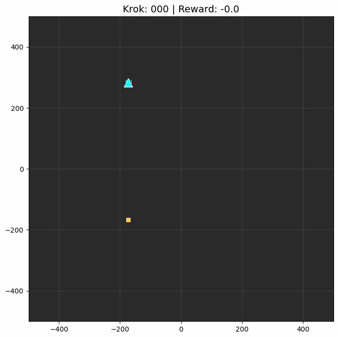

1. Single Scout: Autonomous Fire TrackingDemonstration of basic quadcopter behavior during fire detection and maintaining a stable hover over the ignition source.
2. Dual Scouts: Emergent Cooperation
Coordination of multiple reconnaissance drones to efficiently cover larger territories and provide redundant tracking.